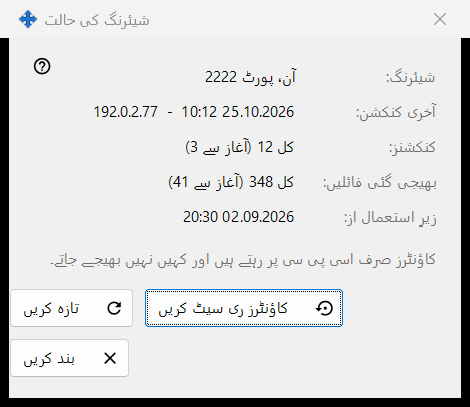
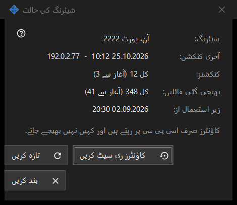

شیئرنگ کی حالت
یہ کس مقصد کے لیے ہے
شیئرنگ کی موجودہ حالت اور اس کے سادہ کاؤنٹرز دکھاتی ہے۔ یہ مرکزی ونڈو کے اعداد و شمار لنک سے کھلتی ہے۔


اس ترتیب میں
- اوپر حالت پڑھیں۔
- آخری کنکشن، کنکشنز کی تعداد اور بھیجی گئی فائلیں دیکھیں۔
- نئی قدریں لینے کے لیے تازہ کریں دبائیں۔
- گنتی نئے سرے سے شروع کرنے کو کاؤنٹرز ری سیٹ کریں دبائیں۔
- بند کریں دبائیں۔
عناصر
حالت
شیئرنگ: بتاتا ہے کہ شیئرنگ چل رہی ہے یا نہیں اور کس پورٹ پر، یا یہ بند ہے، یا ورکر دستیاب نہیں۔ زیرِ استعمال از: بتاتا ہے کہ شیئرنگ کب شروع ہوئی۔
کاؤنٹرز
آخری کنکشن: آخری فون کا وقت دکھاتا ہے، یا ابھی تک نہیں۔ کنکشنز: اور بھیجی گئی فائلیں: کل تعداد دکھاتے ہیں اور قوسین میں پچھلے آغاز سے اب تک کی تعداد۔ کاؤنٹرز صرف اسی پی سی پر رکھے جاتے ہیں اور کہیں بھیجے نہیں جاتے۔
تازہ کرنا اور ری سیٹ
تازہ کریں سرور سے قدریں دوبارہ پڑھتا ہے۔ کاؤنٹرز ری سیٹ کریں پہلے پوچھتا ہے: پچھلی قدریں بحال نہیں کی جا سکتیں۔ ری سیٹ ناکام ہو تو بٹن پر ری سیٹ ناکام رہا دکھائی دیتا ہے۔ بند کریں ونڈو سے باہر نکلتا ہے۔
مینیجر کی ترتیبات · SFTP اشتراک کی ترتیبات · ایکسچینج سرور کی ترتیبات